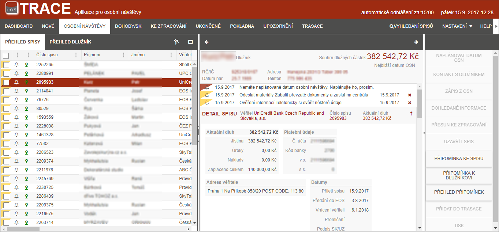

OSOBNÍ NÁVŠTĚVY
Tato záložka obsahuje všechny spisy, u kterých je IP povinen provést OSN, nebo má OSN naplánovanou. Ostatní spisy příslušného dlužníka je možné na této záložce vidět v rozložení přes dlužníka.

Dále zde uživatel provádí přípravu na OSN a má možnost zde vkládat zápisy/informace o provedené návštěvě či zjištěném kontaktu. Zároveň zde uživatel může spisy přesouvat do jiných záložek (DOHODA O ÚHRADĚ, KE ZPRACOVÁNÍ, UZAVŘENÉ).